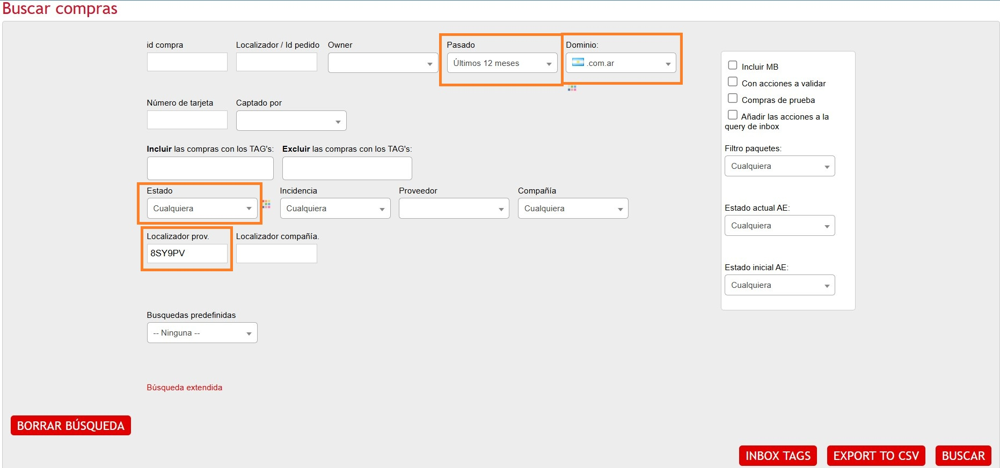
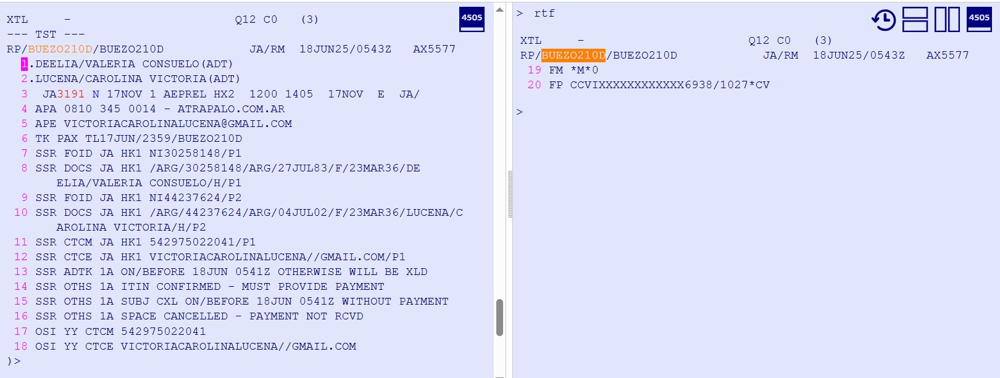
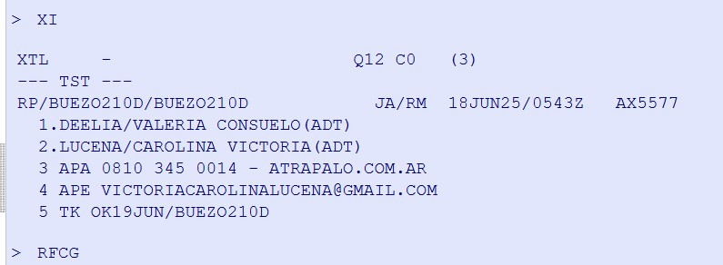

Comandos importantes
Cuando se produce un cambio o cancelación en un vuelo o bien la compañía aérea nos realiza alguna notificación sobre un PNR, estas reservas entrarán por colas y deberemos gestionarlas.
¿Cómo accedemos al sistema de colas?
QT: Para ver todas las colas que tienen alguna reserva dentro.
QTQ: Aca vemos todas las colas que tenemos con sus respectivos nombres sin importar si tienen o no reservas.
QC/12 (nro de cola): Para ver una determina cola.
QS/12 (nro de cola): Para entrar a una determina cola.
Si utilizamos Smartpoint clickeamos encima de la cola que vayamos a revisar.
QD: Para salir de una reserva sin eliminarla de la cola. Pasa a la siguiente reserva
QN: Para eliminar una reserva de la cola. Pasa a la siguiente reserva
QE/7 (nro de cola): Para pasar una reserva a otra cola.
QI: Para ignorar el PNR y salir de la cola.
QIR: Para ignorar el PNR, sale de la cola y recupera el PNR.
Amadeus se maneja ademas con categorias y rangos de fechas.
Categorias
Cat 0 - General
Cat 1 - Servicios aéreos
Cat 2 - Servicios de hotel
Cat 3 - Servicios de coche
Cat 4 - Servicios de tour
Cat 5 - Otros proveedores
Cat 6 - SSR’s
Rangos de fechas
D1 - Hoy y dos días más
D2 - De tres a cinco días desde la fecha actual
D3 - De seis a ocho días desde la fecha actual
D4 - De nueve días en adelante desde la fecha actual
Cola 12 - Tiempo Limite Pasado
Son reservas que tienen algún trayecto en HX.
Antes de realizar ninguna gestión, deberemos verificar qué es lo que ha ocurrido y por qué motivo está el
trayecto cancelado.
Estas acciones de parte de las aerolíneas son constantes, por ende el chequeo de esta cola debe ser todo el dia dejandola a 0 al fin del dia
Reservas sin itinerario y sin ticket
Estos son los casos que debemos encontrarnos si estamos haciendo bien el trabajo.
Lo primero que debemos hacer es abrir el Admin Vuelos y buscar el pedido con el pnr.
Los filtros son:

Simplemente debemos asegurarnos que el estado del admin es correcto, es decir estado Cancelado/Anulado
Nuestra tarea en estos pnrs es simplemente sacarlos de la cola.
Comando para sacar de cola: QN
Reservas en HX sin ticket
Reservas no emitidas donde la compañía aérea canceló los lugares.
Lo primero que debemos hacer es abrir el Admin Vuelos y buscar el pedido con el pnr.
Caso 1 - Pedidos por trabajar
Si hay pedido en Admin, puede tratarse de una reserva Confirmado/Pendiente.
En este caso cancelaremos el itinerario limpiando el pnr.
Comando de limpieza de pnr: XI
Para confirmar la accion debemos firmar y cerrar.
Comando de firma: RFCG(iniciales)
Comando de cierre: ER
Dejaremos un comentario en admin: Tramos HX, limpio de Q12
Luego daremos aviso al agente que tenga asignado el pedido para que puedan gestionarlo cuanto antes.
Para finalizar el proceso, sacamos el pnr de la cola.
Comando para sacar de cola: QN
Caso 2 - Pedidos trabajados
Podemos encontrarnos pedidos en estado Cancelado/Anulado.
Todos los agentes conocen la importancia de limpiar los pnrs una vez que se cancelan las reservas para evitar los ADM por malas prácticas.
No deberiamos encontrar pedidos con Tramos HX sin ticket con admin cerrado

En este caso cancelaremos el itinerario limpiando el pnr.
Comando de limpieza de pnr: XI
Para confirmar la accion debemos firmar y cerrar.
Comando de firma: RFCG(iniciales)
Comando de cierre: ER

Dejaremos un comentario en admin: Tramos HX, limpio de Q12
Y para finalizar el proceso, sacamos el pnr de la cola.
Comando para sacar de cola: QN
Caso 3 - Estado Vendido
Al hacer la busqueda en admin podemos encontrar pedidos en estado Vendido.
Esto obviamente habla de un error ya que no deberia estar vendido sin ticket emitido.
Estos casos debemos analizarlos para detectar el problema y actuar en base a la mejor solucion posible hacia el cliente.
Dejaremos comentarios en admin sobre la acción que tomemos.
Agregaremos una nota en la pnr con el localizador Atrapalo correspondiente.
Comando de carga de nota: RM.VXXXXXX.
Para confirmar la accion debemos firmar y cerrar.
Comando de firma: RFCG(iniciales)
Comando de cierre: ER
PNR con tramos HK y ticket OPEN
Recordemos que en esta cola se cargan los pnrs que tuvieron alguna cancelacion de tramo.
Si hubo un trabajo manual de agente desde la tarea de emisiones, seguramente se haya retomado (tramos HK) y emitido el ticket pero el pnr sigue estando en la misma cola.
En estos casos, debemos verificar que el ticket esta correctamente sincronizado con el itineario que figura confirmado.
Comando para desplegar el ticket: TWD/L(nro de linea donde esta el ticket)
Tienen que coincidir:
Nro de vuelo
Clase
Fecha
Ruta
Horario(puede haber diferencia de 2hs)
Si el ticket esta sincronizado ok, simplemente sacaremos el pnr de la cola.
Comando para sacar de cola: QN